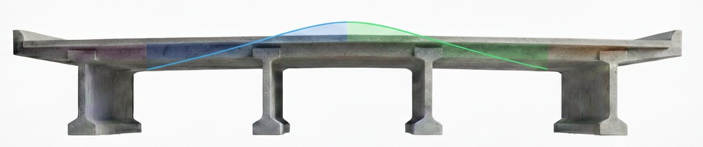
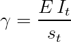
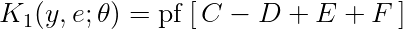
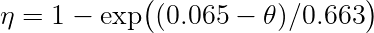
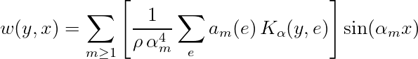
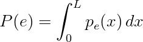
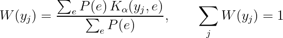
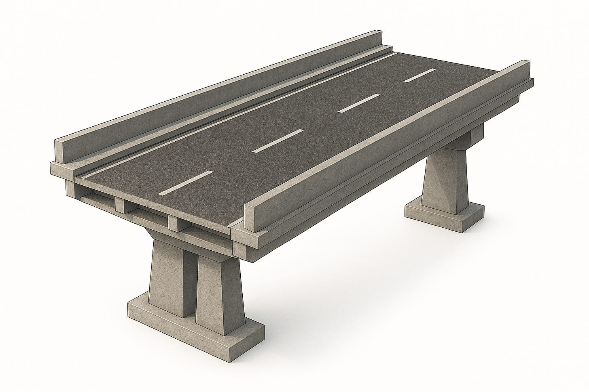

La ripartizione trasversale dei carichi negli impalcati da Ponte

Formule di riferimento


![\alpha=\frac{\gamma_G+\rho_G}{2\sqrt{\rho\,\gamma}},\qquad\n\n\theta=\frac{b}{L}\,\sqrt[4]{\frac{\rho}{\gamma}}\n\n](../assets/formula-images/formula-6d343f05d16d2ce52b.png)










Impostazione tecnica
La ripartizione trasversale dei carichi in impalcati a travi con soletta collaborante può essere ricondotta alla risposta di una piastra ortotropa equivalente : l'impalcato discreto (travi longitudinali, eventuali traversi, soletta) viene rappresentato come mezzo continuo con rigidezze per unità di lunghezza nelle due direzioni principali. La formulazione di Guyon-Massonnet-BareÅ¡ (GMB) permette di combinare uno sviluppo modale lungo la luce con funzioni di ripartizione trasversale per stimare, in modo coerente e rapido, gli effetti (momento/taglio) su ciascuna trave.
Ipotesi alla base della formulazione
- Equivalenza continua travi-soletta : l'impalcato discreto è rappresentato come piastra ortotropa con rigidezze distribuite per unità di lunghezza nelle due direzioni principali (longitudinale e trasversale).
- Linearità elastica : comportamento lineare dei materiali; sovrapposizione degli effetti (principio di sovrapposizione) nelle combinazioni di carico.
- Sezioni piane: in direzione longitudinale (compatibilità ala-anima) e aderenza perfetta soletta-travi (niente scorrimenti relativi).
- Rigidezze quasi costanti lungo la campata : le grandezze equivalenti Ï, , Ï G , G sono assunte uniformi lungo x (variazioni lente tollerate).
- Condizioni al contorno semplificate: in direzione longitudinale: schema di vincolo equivalente "appoggi semplici" per lo sviluppo modale sinusoidale.
- Carichi rappresentabili su serie : le azioni mobili (concentrate, distribuite parziali/totali) sono ricondotte a serie di Fourier lungo la luce (convergenti entro un numero finito di termini).
- Valutazione trasversale tramite K : la distribuzione trasversale si basa sulle funzioni limite k 0 (piastra non torsorigida) e k 1 (piastra isotropa), con interpolazione non lineare k α in funzione di α e ϑ.
- Larghezza attiva convenzionale : l'ampiezza efficace 2b include l'eventuale contributo (ridotto) degli sbalzi laterali.
- Torsione "globale" : l'effetto torsionale è sintetizzato in α mediante Ï G , G equivalenti (Saint-Venant), senza dettagli locali di distorsione o warping complesso.

Modello equivalente e parametri caratteristici
Si definiscono le rigidezze unitarie della piastra ortotropa:
- Rigidezza flessionale longitudinale (per interasse s delle travi):
- Rigidezza flessionale trasversale (per passo s t dei traversi o rigidezza trasversale equivalente):
- Rigidezze torsionali per unità di lunghezza nelle due direzioni (con G=E/[2(1+v)]):
La risposta trasversale è governata da due parametri adimensionali:
dove 2b è la larghezza attiva convenzionale e L la luce. Torna utile introdurre:
Interpretazione: α misura l'efficacia torsionale globale della piastra equivalente (da α=0, non torsiorigida, a α=1, isotropa, mentre Ï‘ lega la snellezza trasversale alla geometria (b/L) e al rapporto di rigidezze Ï/.
Sviluppo modale dei carichi lungo la luce
Assumendo appoggi semplici in direzione longitudinale, il carico p(x) è sviluppato in serie di Fourier sinusoidale:
Per le classi di azioni tipiche:
- Carico Concentrato P in x c :
(se x c =L/2, sopravvivono i soli modi dispari).
- Uniforme parziale p su [x_1,x_2]:
- Uniforme su tutta la luce q (modi dispari):
Ripartizione trasversale: funzioni k 0 , k 1 e interpolazione k α
L'effetto in una trave posta alla coordinata "y" di un'azione applicata alla coordinata trasversale "e" si ottiene moltiplicando l'ampiezza modale a m(e) per un coefficiente di ripartizione k(y,e) che dipende da ϑ,α e da (y,e).
Caso non torsiorigido (α=0): k 0
Si definiscono (con lo scambio di segni per garantire e>y in termini di formula):
- Denominatore e prefattore:
- Argomenti:
- Blocchi elementari:
- Coefficiente:
Caso isotropo (α=1): k 1
Con
Interpolazione torsionale: k α
Si adotta una interpolazione non lineare fra i due limiti:
con esponente η ϑ calibrato (ad es. η=0.05 per ϑ \leq0.10; η=0.50 per 1.00 \leq ϑ \leq2.00; altrimenti:
Ricostruzione della risposta della piastra e proiezione su travi
Per il modo m si pone α m =m Ï€/L. La deformata modale della piastra è:
La pesante penalizzazione α m ^-4 garantisce la convergenza per m elevati.
Per i diagrammi 1D lungo la luce (schema SS), i contributi modali sono:
Con più corsie, le azioni si sommano e si definisce la media per trave :
La pesatura trasversale verso la trave in yj usa le risultanti lineari di ciascuna corsia con P(e):
e quindi
Limiti e condizioni di cautela
- Impalcati curvi o con planimetria complessa : la formulazione GMB nasce per impalcati rettilinei ; su tracciati in curva (o con variazioni brusche di direzione) la ripartizione può risultare non rappresentativa senza correzioni dedicate o un modello FEM di piastra/trave.
- Cassoni molto rigidi a torsione (alti α): per ponti a cassone chiuso/mono-cellula/multi-cellula, la rigidezza torsionale può alterare sensibilmente la ripartizione; la sola interpolazione k α può richiedere calibrazione o l'impiego di estensioni specifiche.
- Variazioni marcate lungo la luce : cambi di spessore della soletta, irrigidimenti localizzati, diaframmi irregolari, travi con inerzia variabile in modo significativo, l'assunzione di rigidezze costanti perde accuratezza ; raccomandata una segmentazione o una validazione FEM.
- Sbalzi laterali estesi : se la larghezza a sbalzo è grande e la sua efficacia non è ridotta in b, il metodo può sovrastimare la partecipazione degli sbalzi; opportuno introdurre coefficienti di efficacia dedicati.
Tool